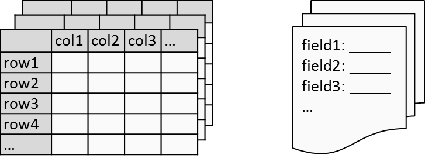

The followng is only two sections of a paper which mainly about Solr search. full paper is available at
Enterprise Search with Development for Network Management System, 2015 full paper PDF or IEEE xplore linkSearch might be a kind of new technology for many software applications. Production teams and management generally require a fundamental understanding of the technology before it can be introduced into production systems. Based our own experience and questions we encountered, we will try to answer the following questions, to give an introduction to search, rather than explaining the complex indexing mechanism or other technical details.
These questions will be answered in the following subsections.
With both SQL Relational (or NoSQL) database systems and search platforms such as Solr, data can be stored, indexed, and retrieved. Many databases also have advanced full-text index and search capabilities, for example PostgreSQL and MySQL. Since, with most existing applications, such as network management systems, data is stored in a traditional database, it is a common question to be asked, why should we use or migrate to a search platform for our use cases.
There are overlapping functions between database systems and search platforms. However, the two types of systems have different focuses making them better for different scenarios. Search engines focus on storing and querying indexes of data rather than the data itself. It is possible for data itself to either be stored within the search engine or stored outside the search engine. Hence, search engines do not offer database features for storing data, such as complex tables/schemas for data modelling, ACID (Atomicity, Consistency, Isolation, and Durability) properties for database transactions, etc. but do provide advanced search features such as sophisticated ranking models, highlighting, etc.
Search engines can offer various advantages over SQL database in many use cases:
Many advanced search features such as auto-suggestion and proximity search are not available in database systems due to the different focus of such systems. In many cases, search engines are used as a secondary index of a database to enhance the search capability while also reducing full database scans.
Search engines are designed and optimized for finding relevant documents from built indexes for a search query. Unlike a database, it does not need to perform a full table scan that would be required for a simple wildcard-based text SQL search. It does not have many of the constraints of database design, such as how quickly an individual document can be updated or retrieved. This means that search engines generally have faster query response times compared to databases.
Enterprise data is normally stored in various data stores, such as SQL databases, content repositories and file systems. It is difficult for users to link information between different data sources. A search engine has the ability to handle various data sources and types (structured and unstructured). This makes it possible to provide an information portal with all the enterprise data in a single interface.
Both SQL and Solr queries have expressive syntaxes for complex data queries. A SQL query is designed for structured data and requires specified data tables to match users’ data queries. In a search engine, data is de-normalized documents. A simple query can start with any terms or words just like Google search. It is not necessary for users to know any query syntaxes or data schemas to start data discovery.
Search applications are not only able to retrieve matching information; the most important part is being able to find the ‘right’ information to answer the users’ questions. There could be millions or billions of matching or relevant search results; there are only a very small amount of results that a typical user is willing to browse. It can be like trying to find the right drop in an ocean for users. Two fundamental approaches to tackling this problem in search application development are: ranking and navigation.
Ranking can determine the most important (top-ranked) query results based on ranking algorithms. Search engines generally have one or more ranking algorithms built in, such as the Vector Space Model (VSM) based algorithm in Lucene [4]. These algorithms are fairly complex and consider many factors to rank results, for example, how important a word is to a document over the whole document collection. Different algorithms may be needed for better results for different application cases. For example, to measure importance of web pages, (Google) PageRank is a link-based ranking algorithm that takes into account hyperlink information between web pages.
Ranking is one of the fundamental problems in information retrieval. Optimizing existing or developing new better ranking algorithms requires a huge amount of scientific and domain knowledge, and could be a difficult task. In most cases, application developers probably just use the built-in ranking algorithms with some offered customization functions. For example, a ‘boosting’ function can assign more weight to words in the title than the content of books.
Navigation gives a UI interface (e.g. advanced search page) to allow navigation of search results. It, like a file manager or browser, has research results organized in different ‘directories’ or ‘filters’. It is a very common UI feature in search engines, especially in e-commerce websites. For example, clothes can be categorised by different sizes, price, etc. It helps users to quickly reduce the search scope through clicks. It makes it easy for untrained users to find the specific data they are interested in. Two common techniques are available for developing search navigation: faceted navigation and document clustering.
Faceted Navigation: is based on faceted classification which classifies documents using multiple taxonomies (sets of attributes or facets). For example, a collection of books might be classified using multiple attributes such as author, title, date, etc. Hence, allowing users to explore a collection of information by applying multiple filters. Faceting is an available feature in Lucene and Solr for application developers to directly use in a search UI.
Document clustering: is based on cluster analysis of document contents to allow automatically grouping of documents into different topics or subjects. For example, results of a search for “Ireland” might be grouped into different topics such as sport, finance, food, etc. As a result, users can quickly select interesting topic groups and filter out undesired ones. This feature is offered as a Solr search component.
A critical challenge in a variety of industry sectors, such as telecoms, nowadays is that IT applications need to handle very large and complex data sets, which are difficult for traditional data management or data processing systems to handle. This makes “Big data” one of the hottest topics in IT industry today. The challenges include various data related tasks such as collection, storage, analysis and of course, search and discovery.
Scalability for big data problem does not exist for current common search platforms, Solr or Elasticsearch. Elasticsearch was initially developed for the purpose of creating a scalable search solution. In the case of Solr, it offers SolrCloud for setting up a cluster of Solr servers to scale out and ZooKeeper is used for cluster coordination and configuration, just as in the Hadoop cluster. As the result, Solr search is an available add-on feature of many commercial Hadoop distributions, such as those from Cloudera and MapR. In these cases, Solr is one of distributed applications integrated into the Hadoop platform and managed by Hadoop management component (YARN) to improve the cluster efficiency.
SolrCould distributes both the index process and the queries automatically. It uses ZooKeeper to automatically elect a new cluster leader when a leader goes down. This avoids the single point of failure of a fixed master slave cluster. The main underlying concept of SolrCloud for data distribution is the same as database systems, by having a large dataset split into multiple shards. Shards are the partitioning unit for the index data, so that search load for that the dataset can be split across multiple servers and search results are merged across those shards.
In the market of search engines or platforms, there are plenty of commercial products which offer great features, such as Splunk. Nevertheless, we were more interested in open-source projects for research prototype development, as it has the convenience of being able to study the internal technical details and implement customized features. Moreover, many commercial search products are built on the open source projects. For instance, Lucidworks Fusion, Cloudera Search, etc. are built on Apache Solr.
Search engines implement the various complex search-related operations, such as index building and querying. Search platforms use the search engine under the hood and build additional functionalities around it, such as scalability, administration and filtering. There are dozens of open source search engines and platforms [5]. Apache Solr and Elasticsearch are the most popular open source search platforms built on the Apache Lucene search engine [6] at the moment. Since both platforms use a same engine and are very actively developed, it is hard to find any significant advantages of one over the other in their most recent versions. Nevertheless, they are backed by different big data vendors making it much easier to pick if a commercial Hadoop distribution is already used in production. As a consequence, our paper is mainly about a study with Solr.
We give a quick summary of the concern regarding technology maturity and commercial support for production development. Search software and vendors are well developed. Open source search platforms Solr and Elasticsearch are proved production ready and with commercial support available. Solr is integrated and offered in big data platforms of all three major Hadoop vendors (Cloudera, Hortonworks, MapR).
Search platforms are not majorly different from databases or data warehouse systems from a conceptual view. Search platforms are considered NoSQL data stores by many people. In databases, data is stored into structured tables, generally, and then queried from those tables. For search platforms, data is indexed as documents and then the documents are searched from the index.
We classify and present the search platform in the following layers from bottom to top; from the various data sources in the data layer that would like to be searched to allowing the user to submit a search query and displaying results in end user UI applications.
Figure 1: Solr search platform stack
In the following, we are going to detail each layer and the corresponding software frameworks or components (Fig.1). Since Solr was selected for our study, as discussed in the previous section, only some major software related to Solr will be covered in here.
One of main advantages of the search platform compared to a database is that it can handle both structured and unstructured data. This means the search platform has the capability to index and search data from existing database, file repository, etc. The data layer represents these various data types and sources.
Since the data sources are external or not tightly coupled to search platforms and there are a huge number of data storage software solutions, we will not detail the software component for the data layer. However, search functions might be only able to retrieve search results to work with external data storage together if data itself is not stored inside the search engine. Depending on the design of the search application, the search engine could store only indexes of the data while the data itself can be stored separately outside the search engine with links to the indexes. Search results can be retrieved from the external data storage based on the link information. For example, web search engines normally do not save the full content of Web pages from external web servers but instead just store page indexes and the URL of pages. Search engines used as secondary index of databases such as Hbase, are similar examples.
For common database systems, a Table is used as a data structure to store related information. It consists of fields (columns), and rows. Multiple tables can be formed for different topics in a logic database, such as employee (name, department, role…) table, customer (name, address, sex…) table.
In the concept of a search engine, documents are the unit of indexing and search. A Document is a set of fields. Each field has a name and a textual value. It is just like a paper document, which has title, author, date, etc. Unlike databases, which can have multiple tables in a logical database, all data in a search engine must be de-normalized in to a single defined document schema in a logic document collection (Fig.2).
Figure 2: Tables in a Database (left) V.S. Documents in a Collection (right)
Hence, for a piece of data, regardless of if it is structured or unstructured, all searchable information of the data must be extracted and converted to a document, so that it can be indexed and searched afterward. Due to the complexity and variety of data, additional software components to the Solr API, handler, etc. might be used to build documents, for example, for extracting information from audio files or web pages; or for language translations.
Nutch
Highly scalable web crawler
TIKA
Toolkit for detecting, parsing and extracting metadata and text content from files for indexing
UIMA
UIMA stands for Unstructured Information Management Architecture. Framework for transforming unstructured information, such as text, audio and video into structured information
OpenNLP
Machine learning based toolkit for the processing of natural language text
GATE
A suite of tools for text processing
Kuromoji
A Japanese morphological analyser that provides the Japanese language support in Solr
Smartcn
A library for analysing Chinese text that provides the Chinese language support in Solr
Spatial4j
A geospatial Java library with Solr integration
Lily HBase Indexer
A tool for indexing data stored in HBase
Solandra
Integration of Solr and Cassandra
Morphlines
Framework for easily developing Hadoop processing applications for loading data into Solr, HBase, HDFS or other data warehouse.
Indexing is the process of converting document fields into a format or index that facilitates rapid searching. A simple analogy is an index that you would find at the end of a book: That index points you to the location of topics that appear in the book. These functions are implemented by a search framework or library which is the core engine of a search platform.
Lucene
Java search engine library for indexing and searching
It is sometimes necessary to apply additional processing logic to search queries, search results, etc. in many application use cases. For example, making searches return the first paragraph of a text document field if the text content is too long. In addition to the Solr API, handler, etc., there are other Solr add-on components, which developers can use that allow them to specify processing logic.
Business Rules for Solr
A module for Solr that integrates with rules engines.
Carrot2
Search results clustering engine
Beside core indexing and search functions provided by search engine library, i.e. Lucene, additional functionality like HTTP APIs, administration interface; scalability, content parsing, etc. are also commonly required for building search applications. As a consequence, applications, such as Solr, are built on top of the Lucene core engine to provide a search platform service.
Solr
The search engine interface to the Apache Lucene search library
An end user application requires a UI for submitting search queries and browsing search results, similar to a database browser.
Velocity UI
Built-in default Solr search UI
Hue
Hadoop Web UI contains Search UI for Solr
Zoomdata
Visualization & Analytics Platform
VuFind
A library resource portal
Blacklight
Search interface for Solr
AJAX Solr
A JavaScript library for creating user interfaces to Apache Solr.